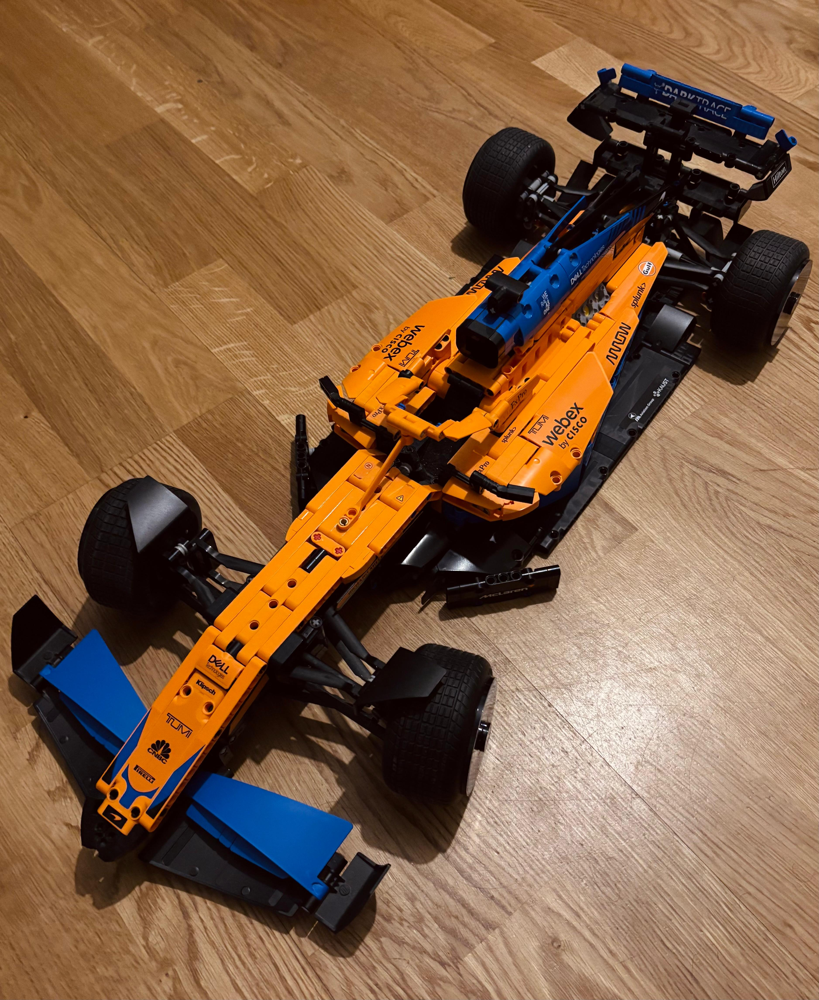

Lego Builder Logs
When I need a different kind of problem to solve, I swap neural nets for brick sets. This is where I park my favorite builds, from tiny speed champions to slow, detailed Technic projects.
Think of it as a visual changelog of weekend sessions spent in flow, one brick at a time.
Build Gallery
McLaren
